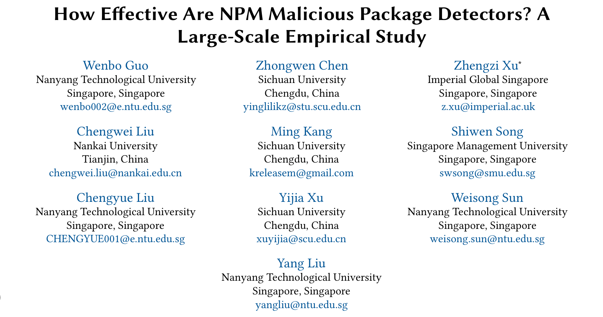
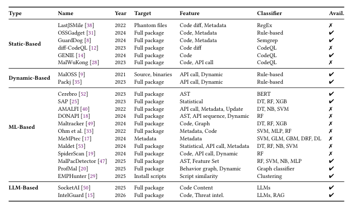
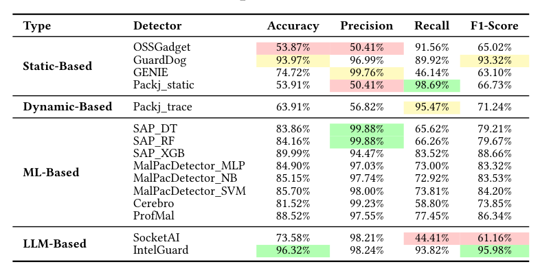
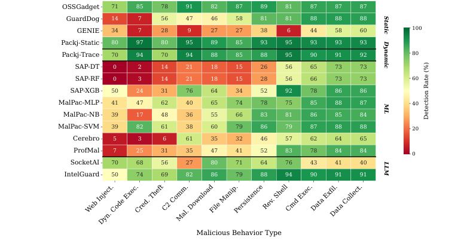
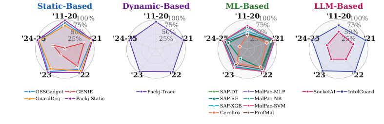
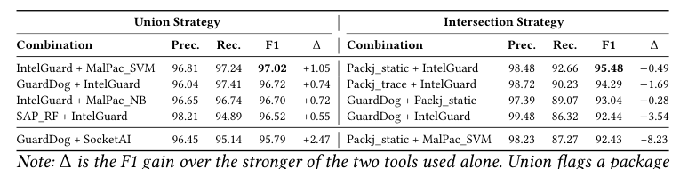

本文看点
01
11工具统一基准横向评测
02
逐个读源码解释成败
03
攻击变简单反而更难检测
01
PAPER INFO
论文信息
【论文题目】How Effective Are NPM Malicious Package Detectors? A Large-Scale Empirical Study
【论文链接】https://arxiv.org/abs/2603.27549
【数据开源】https://doi.org/10.6084/m9.figshare.31869370

— 论文题头
先说一句，这篇是我们自己团队的工作，已被软件工程顶会 ASE 2026 录用。团队来自南洋理工大学、四川大学、南开大学、帝国理工新加坡等，长期做软件供应链安全（此前的 IntelliRadar、MalTotal 等恶意包情报与检测工作也出自这条线）。这次我们把镜头对准一个基础但一直没答案的问题：市面上这么多 NPM 恶意包检测器，到底哪个行、哪个不行、为什么？ 因为是我们自己的实证研究，本文写得更深入一些。
02
OVERVIEW
导读
NPM 生态的恶意包威胁越来越严重，学界业界造了一大堆检测器：静态分析、动态沙箱、机器学习、大模型，四种范式都有。但有个尴尬的现实：每个工具都在自己的数据集上、用自己的设置自测，报出来的数字没法横向比，从业者想选一个部署都无从下手。我们做了第一个大规模横向评测：建一个统一基准（6420 个恶意包 + 7288 个良性包，标注了 11 种恶意行为和 8 种规避技术），把 11 个工具的 16 个变体拉到同一张考卷上考。而且关键是，我们不把工具当黑盒，而是逐个读它们的源码，解释性能差异的结构性原因。五个发现每个都能改变你对"恶意包检测"的认知，其中最反直觉的是：ML 工具这几年性能大幅衰退，不是因为攻击变复杂了，而是因为攻击变简单到和正常包在特征空间里统计上无法区分。
03
SETUP
评估对象：四范式 11 个工具
先看我们把哪些工具拉上了考场：

— 图1：评估的 11 个检测工具（16 个变体），覆盖四种范式。静态分析（GuardDog、GENIE、OSSGadget 等看代码不执行）、动态沙箱（Packj 真跑）、机器学习（SAP、MalPacDetector、Cerebro、ProfMal、EMPHunter，各种分类器）、大模型（SocketAI、IntelGuard）
04
FINDINGS
五个发现：检测器为什么行、为什么不行
发现一：精度和召回的取舍，根子在"能力-意图鸿沟"。 恶意包和良性包调用的是同一批操作系统 API（`child_process.exec`、`https.request`），一个 API 能干什么（能力）不等于它想干什么（意图），比如 `child_process.exec` 既能跑正常构建、也能跑反弹 shell。每个检测器本质上都在解决这个"能力-意图鸿沟"，解决得越好，精度和召回越平衡。主结果一目了然：

— 图2：11 个工具的主结果。绿色是优势、红色是短板。IntelGuard（LLM + 检索证据）以 F1 95.98% 居首，GuardDog（污点分析）在传统工具里最好（93.32%）；而 SocketAI 召回只有 44.41%，漏掉三分之一恶意包，当独立检测器不实用
赢家的共同点是用证据判断意图，而不是只看代码能干什么：IntelGuard 从 8000 多份威胁情报里检索相似的已知恶意样本来给判断"接地"，GuardDog 用端到端污点分析追踪敏感数据流到网络汇聚点。而那些"见到敏感 API 就报警"的工具（如 Packj_static 召回 98.69% 但误报海量），或"只看代码本身不追证据"的工具，都栽在了这个鸿沟上。
发现二：行为一旦"扎堆"，就容易被抓。 恶意行为很少单独出现，当"收集数据"和"外传数据"共现时，检测率从单独的 40-72% 跳到 85.4%。最戏剧性的是 SAP_DT，单看某个行为检测率只有 3.2%，行为耦合后飙到 79.3%，涨了整整 76 个百分点。因为孤立的 `os.hostname()` 意图不明，但"取主机名 → 打包成 JSON → 发到外部"这条链就是铁证。

— 图3：各工具在 11 种恶意行为上的检测率热图（绿高红低）。数据收集、数据外泄、命令执行这类"扎堆"行为普遍检得到（>75%），而动态代码执行、Web 注入、凭据窃取这些"独狼"行为是所有工具的共同盲区
这也暴露了一个所有工具都过不去的坎：攻击面错配。Web 注入攻击的是浏览器端 DOM，但所有工具分析的是服务端 Node.js 代码，没有任何规则能桥接：连最强的 IntelGuard，数据外泄检测率 98.5%，一到 Web 注入就掉到 62.5%。有 21% 的恶意包因为这种错配，在代码分析工具眼里是结构性不可见的。
发现三：80% 的攻击者根本不做规避，因为不需要。 反直觉但合理：80.3% 的恶意包不用任何规避技术，因为 NPM 生态根本没有强制的发布前扫描，简单攻击照样能上架、照样能得手。而 72.21% 的恶意包把攻击藏在安装脚本（install script）里，因为 npm 的 `preinstall`/`postinstall` 生命周期钩子保证了代码在 `npm install` 时以完整用户权限自动执行、且抢在任何安全工具介入之前。更极端的是，21.2% 的恶意包纯靠 `package.json` 里的 install 钩子作恶，连一行恶意 JavaScript 都没有：这不是漏洞，是 npm"默认信任发布者"这个设计假设被利用了。
发现四（最反直觉）：ML 工具衰退，是因为攻击变简单了，不是变复杂了。 大家都知道 ML 检测器会随时间性能下降，通常归因于"概念漂移"（攻击手法变了）。但我们追踪发现，SAP_DT 从 2021 年的 87.15% 掉到 2023 年的 39.49%，真正的原因是我们称之为"概念收敛"的现象：

— 图4：四范式工具的检测率随时间演化雷达图。ML 类（第三格）几乎所有工具的覆盖面都在 2022 后大幅收缩，而 IntelGuard（LLM+检索，第四格）和 GuardDog（规则+污点）保持稳定
机理是这样的：攻击者转向了最小足迹代码（能少写就少写，一行命令注入就搞定），于是恶意包在特征空间里变得和良性包统计上无法区分。ML 模型的每一个决策边界都是拟合到它训练时那个语料时代的，一旦攻击"返璞归真"到没有明显特征，边界就失效了。只有 GuardDog 靠持续维护规则实现了真正的恢复，而所有 ML 模型都做不到这一点，因为规则可以人工更新，学到的特征分布不能。这解释了为什么"重训模型"治标不治本。
发现五：工具组合的有效性 = 互补性 减去 误报引入。 从业者常被建议"多个工具一起上"，但我们发现组合不是越多越好。战略性组合能到 97.21% 准确率、97.02% F1，但有个反直觉的不对称：最强的工具被组合拖累，最弱的工具从组合受益最多。

— 图5：Top 工具组合及其相对单个最强工具的增益（Δ）。并集策略下 IntelGuard + MalPac_SVM 达 F1 97.02%；但注意 Δ 值:强工具组合后增益很小甚至为负，因为伙伴引入了新的假阳性
原因很干净：并集（union）会累加两个工具的真阳性，也会累加它们的假阳性。当你把一个高召回低精度的工具配给一个已经很强的工具，它带来的假阳性可能比真阳性还多，反而拖低整体精度。所以组合的价值取决于互补性（两个工具的盲区不重叠），而不是范式多样性（不是"静态+动态+ML"堆起来就好）。判断一个伙伴值不值得加，要看它填补的盲区，减去它引入的误报。
05
TAKEAWAYS
启发与点评
对研究者：这项工作的方法论价值在于"不把工具当黑盒"：通过读 11 个工具的源码，我们把"哪个工具好"这种榜单式结论，升级成了"为什么好、为什么坏"的结构性解释。五个原理（能力-意图鸿沟、行为耦合放大、攻击面错配、概念收敛、组合互补性）都是可迁移的：任何做恶意检测的人都该问自己，我的工具是在判断能力还是意图？我的特征会不会随攻击简化而失效？其中"概念收敛"这个发现对整个 ML 安全方向都有警示意义：它说明在对抗性环境里，攻击者可以通过"变简单"而非"变复杂"来逃避学习型检测，这是传统概念漂移框架完全没覆盖的失效模式。IntelGuard 靠检索情报证据保持稳定，也再次印证了我们一贯的判断：把判断"接地"到可信证据上，比学习易过时的表面特征更耐久。
对从业者：三个能立刻用的判断。其一，选检测器要认清它解决"能力-意图鸿沟"的方式：只看代码能干什么的工具误报会淹没你，能追证据、追数据流的工具（GuardDog 这类污点分析、IntelGuard 这类检索接地）才实用。其二，别忽视 install script：72% 的攻击藏在安装脚本里，对不信任的包用 `npm install --ignore-scripts` 是立刻能做的防护。其三，组合工具别盲目堆范式：加一个工具前先想清楚它填的是不是你现有工具的盲区，否则只会给你增加误报；一个高召回低精度的工具配错了搭档，会把强工具一起拖下水。
一点观察：这篇回到了我们的老本行：软件供应链安全的地基。它和我们之前解读的 Agent Skill 安全系列形成了一个有意思的呼应：Agent 生态正在重演 NPM 走过的路（恶意组件、install 脚本式攻击、检测器的能力-意图困境），而这篇给的是 NPM 这个"过来人"十几年沉淀下来的检测器成败经验。最值得记住的一句是那个"概念收敛"：在安全对抗里，最难防的往往不是越来越复杂的攻击，而是简单到你的检测器认不出它是攻击。这对所有想用 AI/ML 做安全检测的人,都是一句冷静的提醒。